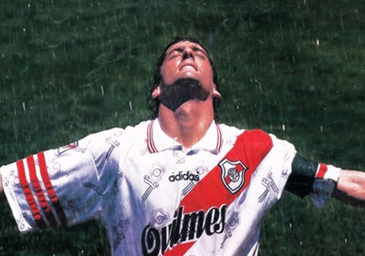
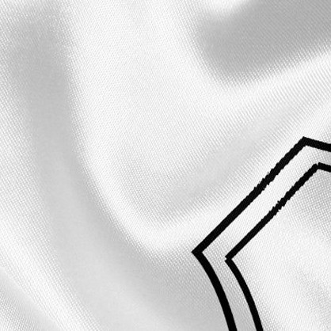
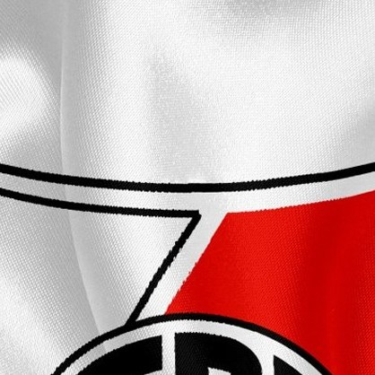
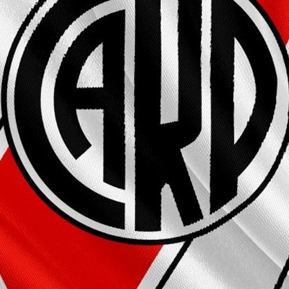

Introducción
El Club Atlético River Plate es un entidad polideportiva de Argentina. Fue fundado el 25 de mayo de 1901 en el barrio de La Boca, tras la fusión de los clubes Santa Rosa y La Rosales, y su nombre proviene de la antigua denominación que se le daba en el inglés británico al Río de la Plata. Su principal actividad es el fútbol masculino profesional, el cual participa en la Primera División de Argentina. Disputa sus partidos en el estadio Monumental, el de mayor capacidad en Sudamérica; y el segundo en el continente, con una capacidad para 84 567 espectadores.
Es considerado uno de los denominados cinco grandes del fútbol argentino, a partir de que la AFA dispusiera la implementación del llamado "voto proporcional" en 1937, que consistía en darle mayor poder de decisión a aquellos clubes con mayor número de socios, mayor antigüedad y mayor cantidad de títulos. Mantiene rivalidades con distintos clubes del país. La más importante es con Boca Juniors como clubes de mayor repercusión y éxito de Argentina en el denominado "Superclásico".
Historia

El 25 de mayo se funda River Plate tras la fusión de La Rosales y Santa Rosa, dos equipos del barrio de La Boca.
1901

Se levanta la primera cancha del lado Este de la Dársena Sur, cerca de las Carboneras Wilson.
1901
River vence a Boca por 2 a 1 (goles de Cándido García y Penney) en el primer clásico de la historia, disputado en cancha de Racing
1913

El club obtiene su único título en la era amateur al quedarse con el primer puesto de la Asociación Amateurs de Football. Se coronó el 9 de enero de 1921.
1920

El 26 de mayo ante 70.000 personas se inaugura el Monumental con un amistoso entre River y Peñarol. El conjunto local vence por 3 a 1.
1938

Debuta Félix Loustau en la primera de River y queda conformada la delantera de “La Máquina”, con Muñoz, Moreno, Pedernera, Labruna y Loustau.
1942

La tercera corona seguida se alcanza en un Monumental repleto tras derrotar por 2 a 0 a Independiente, con goles de Labruna y Menéndez.
1957

El estadio Monumental es escenario del campeonato mundial de fútbol. Allí, el 25 de junio, Argentina vence a Holanda por 3 a 1 en tiempo suplementario y se consagra.
1978

El 29 de octubre River derrota a América de Cali en el Monumental por 1 a 0 con gol de Juan Gilberto Funes y se adjudica la Copa Libertadores de América.
1986
Para concluir el mejor año de su historia deportiva, River derrota a Steaua de Bucarest en Japón con tanto anotado por Antonio Alzamendi y levanta la Copa Intercontinental.
1986

El 26 de junio, en una final memorable, el equipo dirigido por Ramón Díaz supera por 2 a 0 a América de Cali y se consagra nuevamente en la Copa Libertadores.
1996
En 2011, producto de una profunda crisis institucional y deportiva, el equipo de Primera División perdió la categoría.
2011
Bajo la gestión de Rodolfo D’Onofrio, el Club volvió a ocupar el lugar que históricamente mereció.
2012

El 5 de Agosto, el millonario vuelve a levantar la Copa Libertadores venciendo 3 a 0 a Tigres en el Monumental.
2015
River llegó a la definición de la Copa Libertadores ante Boca Juniors, en lo que fue un acontecimiento histórico para el fútbol sudamericano y mundial. El equipo de Marcelo Gallardo fue protagonista de un título para recordar toda la vida.
2018
Titulos
Nacionales

Torneo 1920
Torneo 1932
Campeonato 1936
Copa de Oro 1936
Torneo 1937
Torneo 1941
Torneo 1942
Torneo 1945
Torneo 1947
Torneo 1952
Torneo 1953
Torneo 1955
Torneo 1956
Torneo 1957
Torneo 1975
Torneo 1975
Torneo 1977
Torneo 1979
Torneo 1979
Torneo 1980
Torneo 1981
Torneo 1952
Torneo 1985/86
Torneo 1989/90
Torneo 1991
Torneo 1993
Torneo 1994
Torneo 1996
Torneo 1997
Torneo 1997
Torneo 1999
Torneo 2000
Torneo 2002
Torneo 2003
Torneo 2004
Torneo 2008

Torneo 2014
Liga 2021
Liga 2023
Copa Jockey Club 1914
Copa Competencia 1932
Copa Ibarguren 1937
Copa Escobar 1941
Copa Ibarguren 1941
Copa Ibarguren 1942
Copa Ibarguren 1952
Superfinal 2013/14
Copa Argentina 2016
Copa Argentina 2017
Supercopa Argentina 2017
Copa Argentina 2019
Supercopa Argentina 2020
Trofeo de Campeones 2021
Trofeo de Campeones 2023
Supercopa Argentina 2023
Internacionales


Copa Libertadores 1986
Copa Liberadores 1996
Copa Libertadores 2015
Copa Libertadores 2018
Recopa Sudamericana 2015
Recopa Sudamericana 2016
Recopa Sudamericana 2019
Copa Intercontinental 1986


Copa Interamericana 1987
Supercopa 1997
Copa Suruga Bank 2015
Copa Sudamericana 2014
Jugadores historicos
Angel Labruna
1939 - 1959
_-_El_Gráfico_2147.jpg)
Amadeo Carrizo
1945 - 1968
Norberto Alonso
1971 - 1987

Enzo Francescoli
1983 - 1998

Marcelo Gallardo
1992 - 2006
Ariel Ortega
1991 - 2006
Leonardo Ponzio
2006 - 2021
Enzo Perez
2017 - 2023
Juego
Rompecabezas
Instrucciones


